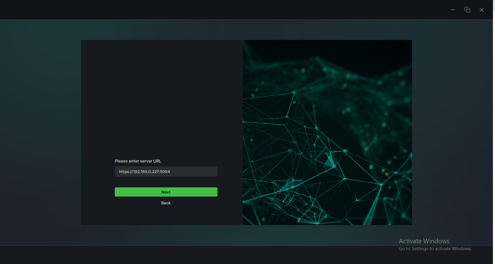
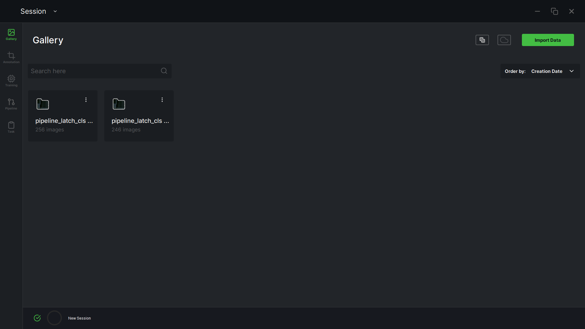
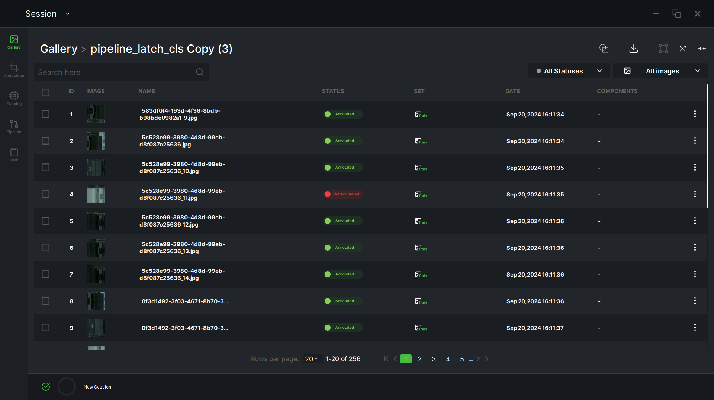
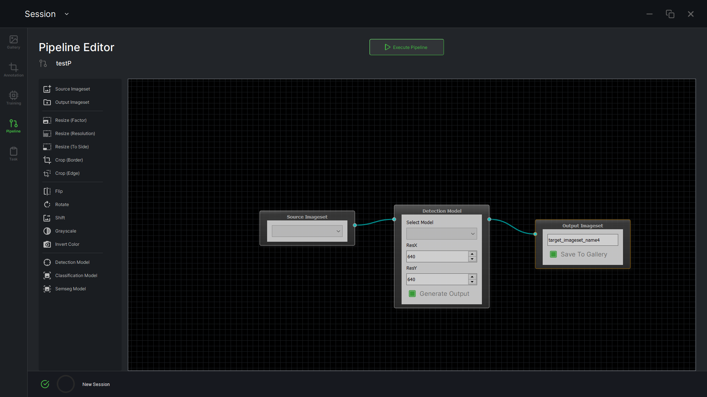
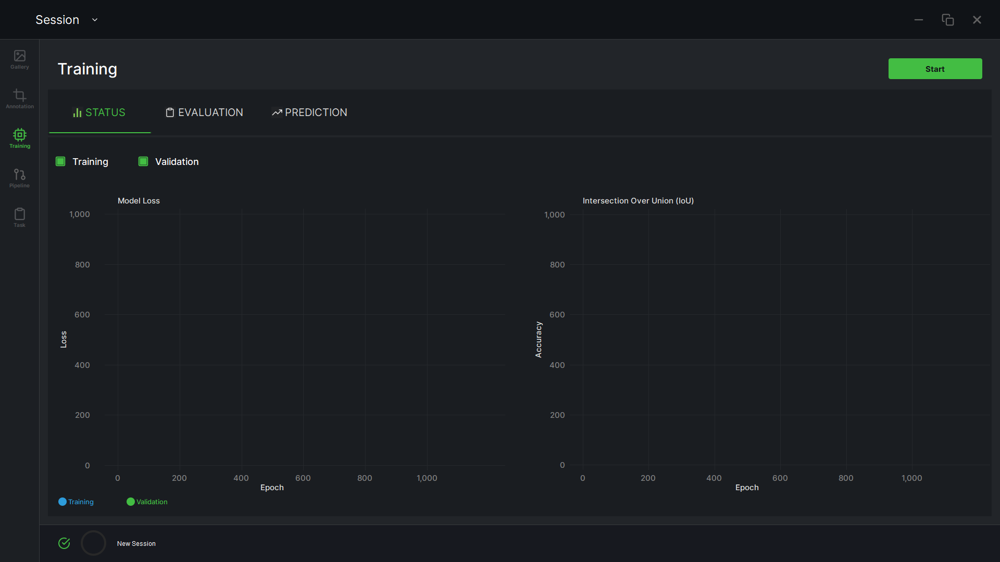
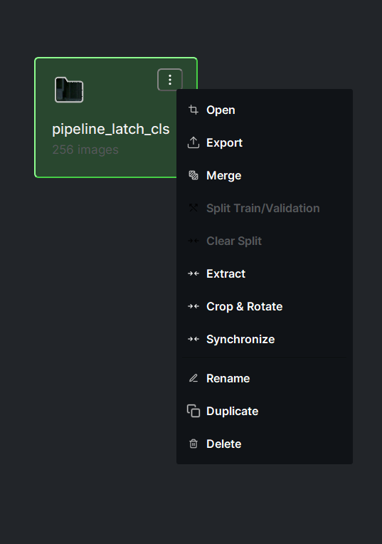

01
About
I'm a Qt and C++ developer with 6+ years of remote experience working
with engineering teams in Germany and the United States. My focus is the harder side of
Qt work — custom embedded Linux platforms, multi-process architectures
with gRPC and protobuf, and production code that has to run reliably
on real hardware for years.
I've shipped Qt/QML applications across industrial measurement, aerospace HMI, AI-assisted
quality inspection, and VoIP telephony. I work end-to-end: from QML frontend through C++
backend services to PostgreSQL persistence and Yocto image builds.
Currently available for full-time, contract, or part-time engagements.
02
Selected Work

Screenshot placeholder
Xylem industrial measurement UI
Co-designed and shipped a Qt/QML industrial measurement platform running on
custom Yocto Linux hardware, supporting up to four simultaneous sensors
(pH, dissolved oxygen, conductivity, turbidity) with live charting,
calibration workflows, and regulated audit logging.
Architected the gRPC-based IPC between the QML frontend and C++ measurement
backend, replacing brittle direct coupling and enabling independent deployment.
Own the persistence layer (PostgreSQL via QxOrm), PDF report export,
user/role management, logging, and NTP synchronization.
Qt 6
QML
C++17
gRPC
Protobuf
Yocto Linux
PostgreSQL
QxOrm
ARM Cortex-A
CMake
Screenshot placeholder
Relimetrics inspection UI

Screenshot placeholder
Relimetrics inspection UI

Screenshot placeholder
Relimetrics inspection UI

Screenshot placeholder
Relimetrics inspection UI

Screenshot placeholder
Relimetrics inspection UI

Screenshot placeholder
Relimetrics inspection UI

Screenshot placeholder
Relimetrics inspection UI

Screenshot placeholder
Relimetrics inspection UI
Built Qt Widgets and PyQt desktop applications for AI-assisted visual
inspection on the factory floor, with operator-facing workflows for
calibrating models, reviewing defects, and managing inspection sessions.
Worked directly with the ML team to integrate inference results into the
UI in real time, exposing model confidence and inspection outcomes through
interfaces that production operators could actually use under time pressure.
Qt 5
Qt Widgets
PyQt
Python
C++
Windows
Computer Vision

Screenshot placeholder
Cabin control HMI mockup
Built QML interfaces for aircraft cabin control panels — lighting,
climate, IFE, and crew workflows — designed to meet aviation reliability
and readability standards. Integrated with onboard systems via
D-Bus, MQTT, and WebSocket IPC.
Focused on touch-target sizing, glanceable layouts, and graceful
degradation when subsystems were offline — the kind of attention to
edge cases that distinguishes safety-relevant HMI from generic Qt UIs.
Qt
QML
D-Bus
MQTT
WebSocket
Embedded Linux
Cross-platform Qt/QML desktop VoIP client running on Windows, macOS,
and Linux. Worked on UI, signalling, and call-state management for
a commercial product used by business customers.
Qt
QML
C++
SIP/VoIP
Windows
macOS
Linux